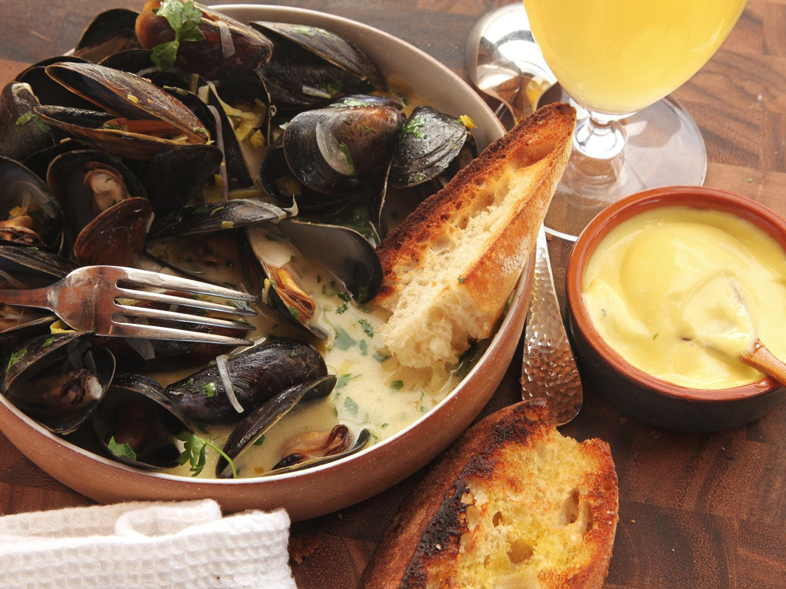

Belgian Mussels

Description
Mussels have a wonderful savory briny ocean flavor and are inexpensive compared to oysters or clams.
Belgian beer adds a nice earthy flavor. We throw in some smoked ham, garlic, and fresh herbs to create a delicious appetizer for your guests.
Add bread and a green salad for a complete meal.
Buy fresh mussels and use within a day of purchase. Choose mussels with a tightly closed shell and discard any
with chipped or broken shells. Wrap in moist paper towels and refrigerate when you get them home.
Ingredients
- 2 pounds mussels
- 2 tablespoons extra-virgin olive oil
- 2 tablespoons unsalted butter, divided
- 1 cup diced smoked country ham (about 4 ounces)
- 1 tablespoon minced garlic
- 1 shallot, minced
- 2 sprigs fresh thyme
- 1 (12-ounce) bottle Belgian-style ale
- 1 tablespoon chopped flat-leaf parsley
- 1 tablespoon chopped fresh tarragon
- 1 tablespoon chopped fresh basil
- 3 tablespoons freshly squeezed lemon juice, from 1 lemon
- Kosher salt, to taste
- Freshly ground black pepper, to taste
- 1 crusty baguette, cut into 1-inch-wide slices, for serving
Steps
- Under cool water, scrub each mussel's shell with a stiff-bristled brush. Remove the byssus thread (or beard),
which connects the mussel to rocks in the water. Grab the fibers with your fingers and pull them out, tugging
toward the hinged point of the shell.
- In a medium-sized saucepan or skillet, heat the oil and 1 tablespoon of the butter over medium heat.
After the butter melts, add the ham and cook for 4 to 5 minutes, until crispy and the fat has rendered.
- Add the garlic, shallot, and thyme and cook in the rendered fat over medium-low heat for about 2 minutes,
or until soft. Add the mussels, stir to coat with the vegetables and pan juices, and cook for about 1 minute.
- Add the beer, cover the pan, and bring to a boil over medium-high heat. Reduce the heat and simmer for 8 to 10 minutes,
until all the mussels open. (Discard any that do not open.)
- Add the parsley, tarragon, basil, lemon juice, and the remaining tablespoon of butter. Toss to distribute the herbs
and lemon juice and allow the butter time to melt. Season to taste with salt and pepper.
- Using a slotted spoon, serve them in a large bowl or divide the mussels evenly among 4 smaller bowls. Pour the broth
from the pan over the mussels, and serve with the bread.